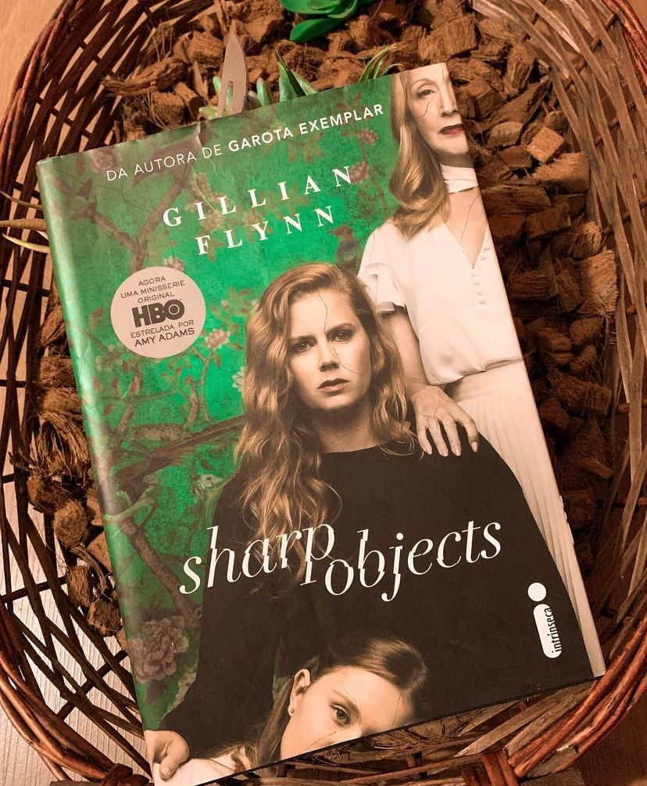

Sharp Objects: Objetos Cortantes
⚠️Gatilhos: Abuso, auto mutilação.
Com reviravoltas surpreendentes, Sharp Objects: Objetos cortantes narra o retorno da repórter Camille Preaker, recém-saída de um hospital psiquiátrico, à sua cidade natal para investigar o brutal assassinato de uma menina e o desaparecimento de outra. Desde que deixou a pequena Wind Gap, no Missouri, oito anos antes, Camille quase não falou com a mãe neurótica, o padrasto e a meia-irmã que praticamente não conhece. Hospedada na casa da família, a jornalista precisa lidar com as memórias difíceis de sua infância e adolescência. E à medida que as investigações para elaborar sua matéria avançam, Camille passa a desvendar segredos perturbadores, tão macabros quanto os problemas que ela própria enfrenta.
Livro de estréia de Gillian Flynn (autora do best seller “Garota Exemplar”) virou série pela HBO protagonizado por Amy Adams e direção de Jean-Marc Vallée. O livro é maravilhoso, com uma narrativa muito bem escrita e acompanha a vida de Camille que após sofrer uma grande perda anos atrás se vê perdida em problemas como auto mutilação, álcool e muitas lembranças do passado. O livro é pesado e vai te prender tanto na teia de problemas da protagonista quanto no mistério que cerca a morte das garotas. A obra é sombria, instigante e angustiante, ao mesmo tempo é viciante e ficamos ávidos pelas revelações que como sabemos promete! Flynn é famosa por suas reviravoltas e quando o leitor acha que desvendou o mistério, outro plot twist é inserido. “Eu me corto, sabe? E pico, e fatio, e gravo e furo. Sou um caso muito especial. Eu tenho determinação. Minha pele grita, vê?”